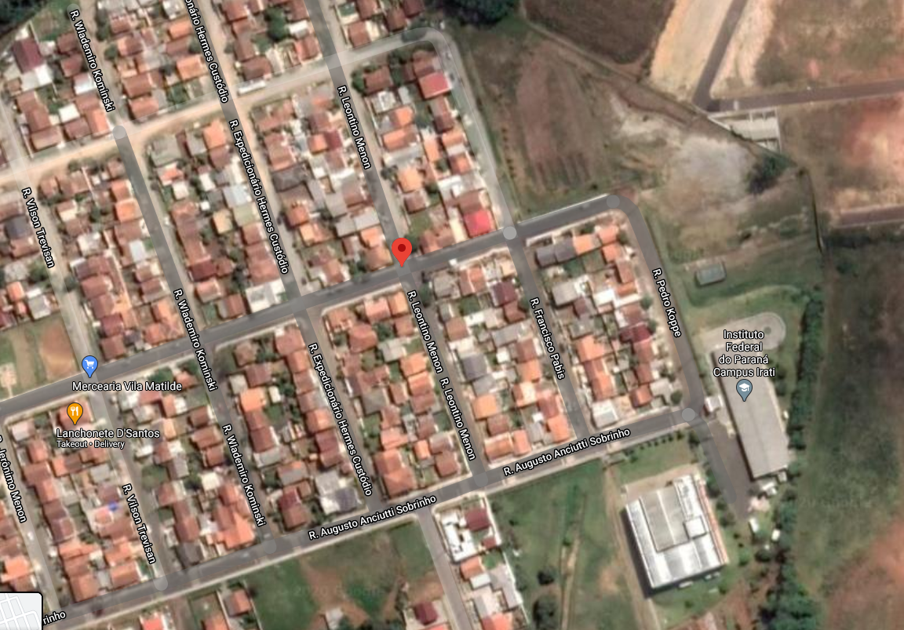

O Weballoon é um site criado pelo aluno Éderson do Instituto Federal do Paraná - Campus Irati (IFPR - Irati) para a disciplina de Desenvolvimento Web. O site é dedicado aos balões, em todos os tipos de vôos, suas competições, a história do balonismo e
muito mais.
COMO SURGIU O WEBALLOON?
O site foi idealizado no início de 2020 e teve o início de seu desenvolvimento apenas no final do ano, no dia 01/12/2020. A ideia surgiu de um lapso mental da primeira coisa que o criador pensou quando não sabia o tema para seu site, e tinha um prazo
para escolher esse tema.

Sede do Weballoon:Rua Leontino Menon, Vila Matilde, Irati - Paraná